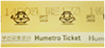
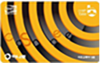
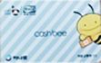
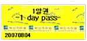
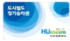

교통정보
여행준비 > 교통정보
여행준비 > 교통정보
오전 5시부터 23시 59분까지 운행 ※ 자세한 사항은 홈페이지 또는 역내에 게시된 시간표를 참고
| 교통수단 | 상세내용 |
| 버스 |
버스는 시내버스, 리무진 버스, 시내급행버스, 마을버스, 시외버스를 이용 할 수 있고, 버스의 종류와 목적지에 따라 요금은 상이합니다. |
| 지하철 |
공항에서 경전철을 타고 2호선 사상역이나 3호선 대저역에서 환승하면 가장 저렴하고 손쉽게 부산시내로 들어 갈수 있습니다. |
| 택시 |
시내로 들어가는 택시는 일반택시와 모범, 대형택시가 있습니다. 일반택시에 비하여 모범, 대형택시의 비용이 약50%정도 비싸지만 차량이 더 크고 고급스럽습니다.※실제 운행시간 및 요금은 변동될 수 있습니다. |
| 종류 | 상세내용 |
| 1회용 승차권 |  |
| 교통카드 (일반용 / 청소년용) |
  |
| 정기승차권 (1일권 / 7일·1개월권) |
  |
정기승차권은 1일 권, 7일 권, 1개월 권이 있습니다. 1회용 승차권과 교통카드는 구간에 따라 차액이 발생하며, 정기승차권은 구간에 따른 차액은 발생하지 않습니다. 승차권은 역내에 위치한 승차권 판매기에서 구입할 수 있습니다.